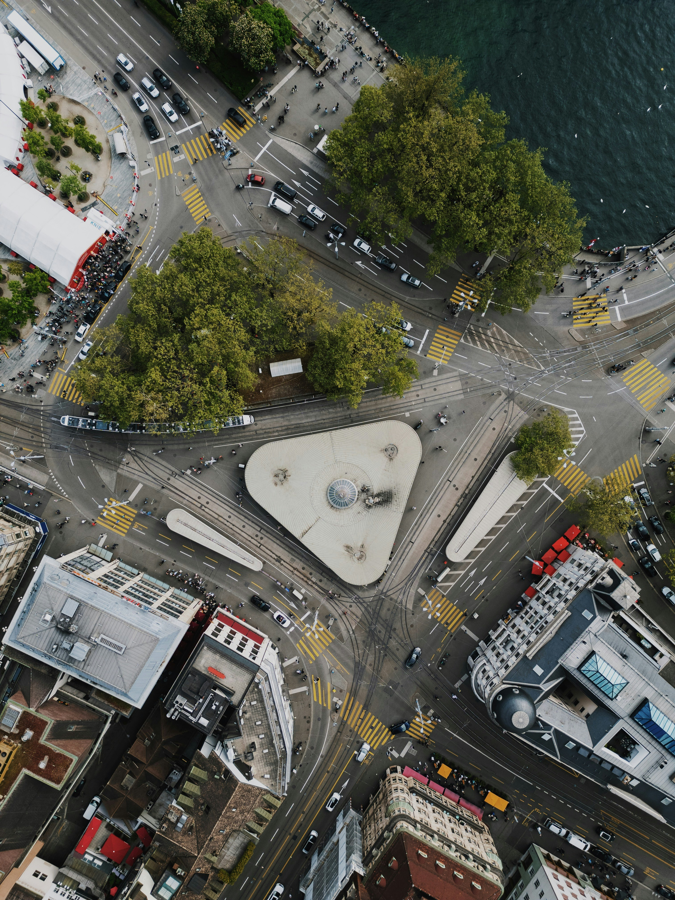

Welcome to the Computing Milestones Museum
Explore the history of computing technology...


Exhibits
Start with Flowbite Design System
Static websites are now used to bootstrap lots of websites and are becoming the basis for a variety of tools that even influence both web designers and developers.
Read moreBest react libraries around the web
Static websites are now used to bootstrap lots of websites and are becoming the basis for a variety of tools that even influence both web designers and developers.
Read more